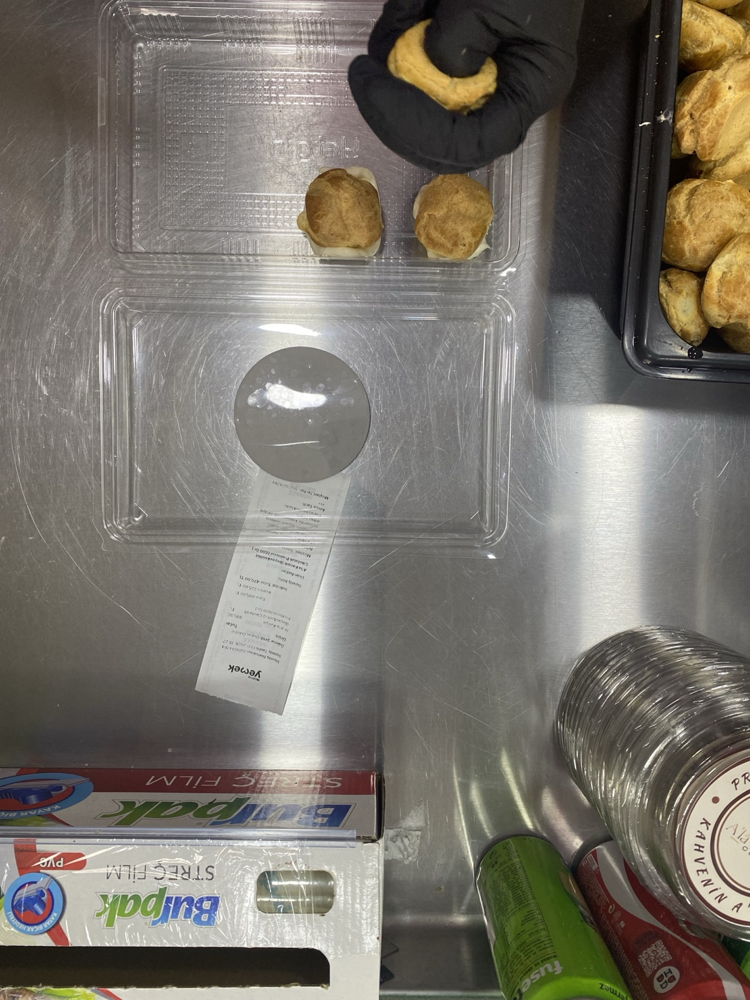

Yapay tatlandırıcı
ve glikoz şurubu
Her lokmada mutluluk
Günlük taze olarak hazırlanan profiterollerimiz, çikolata ve kahve keyfiyle buluşuyor.
Çikolata seçimimiz
Sütlü, beyaz ve bitter Callebaut çikolatalar, taze kremayla dolu profiterolün üzerine dökülür.
Özenle hazırlanır
Her gün taze hazırlanan hamur, her lokmada aynı lezzeti sunar.
Her detayında özen, her lokmasında gerçek lezzet.
Lezzetimizi korurken tercih etmediğimiz içerikler.
ve glikoz şurubu
ve koruyucu
ve palm yağı



Tatlı mutluluk, A’lâ’da...
A’lâ’nın özenle hazırlanan çikolatalı profiterol lezzetlerini keşfet.

Yumuşak iç kreması ve sütlü çikolata lezzeti.
Yoğun çikolata tadını sevenlere özel.
Beyaz çikolatanın kendine özgü lezzeti.
Beyaz ve sütlü çikolatanın bir araya geldiği lezzet.
Karamel bisküvi sosuyla farklı bir tatlı deneyimi.
Mekânımızdan ve günlük hazırlık sürecimizden görüntüler.


MİSAFİRLERİMİZİN GÖZÜNDEN
Lezzetimizi deneyimleyen misafirlerimizin düşünceleri.
Misafirlerimizin deneyimlerini Google'da keşfedin.
G Google'da Görüntüle ↗“Taptaze profiterol. Lezzeti çikolatası hem sütlü hem bitter tam kıvamında. Ankara’nın en iyilerinden. Profiterol buradan alınır. Emeği geçen herkese çok teşekkür ederim.”
“Çok taze ve lezzetli bir profiterol. Çikolatasını, sosunu yanımızda hazırladılar. Temiz ve nezih bir ortam. Çalışan hanımefendi de güler yüzlü ve samimi. Ailecek gelinebilecek bir mekan. Eve paket olarak da aldık.”
“Yeni favorim. Denemek için sadece bir şans vermekle başlayan yolculuğumuz müdavimlikle devam ediyor. Tatlı severlerin kesinlikle denemesi gereken bir lezzet. Yeni karamel sosları da efsane olmuş. Gerçekten işlerinin hakkını veriyorlar. Emeklerine, fikirlerine, ellerine sağlık.”
Sevdiğin lezzetlere kullandığın sipariş platformundan ulaş.